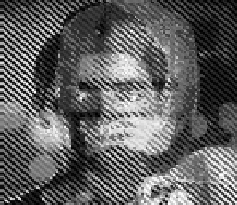
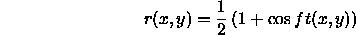
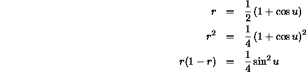

Now that you have gained some experience with Scheme, you are ready to work on the programming assignment. When you are finished with this section write up and hand in the numbered computer exercises below. Take a look on the web site, in the problem sets section, at the information labeled by ``How should I write up my problem set?'' to see what we are looking for.
Scheme comes with many built-in primitive procedures, including simple numeric procedures such as sin and cos which take as argument a number in radians, and return the sine and cosine of that argument respectively. One way to visualize numeric procedures is to graph them as functions of their arguments. For one-argument procedures, one can use ordinary graphs. For two-argument procedures, it is often convenient to display the values as pictures. That is, we can let b(x,y) be interpreted as a brightness value, and then create a two-dimensional display showing the value of b as a brightness pattern.
In this problem set, we'll play with these two-dimensional
graphs. We have provided you with some
utilities. When you load this problem set (using M-x
load-problem-set), the system will create three graphics display
windows on your screen and give them the names g1, g2 and
g3. Each window is 128 wide and 128 high: the points in the
window have integer x and y coordinates that range between 0 and
127. (These are ``logical coordinates''--the physical size of the
window in pixels may be different from
We have provided you with some
utilities. When you load this problem set (using M-x
load-problem-set), the system will create three graphics display
windows on your screen and give them the names g1, g2 and
g3. Each window is 128 wide and 128 high: the points in the
window have integer x and y coordinates that range between 0 and
127. (These are ``logical coordinates''--the physical size of the
window in pixels may be different from  .)
.)
You can display pictures with the picture-display procedure, which takes two arguments: a window and a picture. Picture-display finds the minimum and maximum values in the picture, scales those values so that the minimum value appears as black and the maximum as white, and then displays the result in the window. You can supply two additional optional arguments to picture-display that set the minimum and maximum display values: any value in the picture below the specified minimum will be displayed as black; any value in the picture above the specified maximum will be displayed as white.
One way to create a picture is as the ``graph'' of a two-argument function, using
(procedure->picture x y b)Here x and y specify the width and height of the picture to be created. x and y must be integers, and b must be a function of two arguments, whose values will be used to create the picture. For example, evaluating
(picture-display g1 (procedure->picture 128 128 +))will fill window g1 with a shaded gray pattern whose brightness at each point (x,y) is x+y. Thus, the brightness increases uniformly as you move diagonally from black near (0,0) to white near (128,128).
Check the 6.001 discussion forum for computer-ex-01
|
Look here
for information about the forum.
| |
Creating a simple cosine grating: Use a procedure of two arguments whose returned value is the cosine of the second argument, transform that to a picture, and display the result:
(define pic1 (procedure->picture 128 128 (lambda (x y) (cos y)))) (picture-display g1 pic1)Note on naming pictures: Whenever you create a picture, you use up memory space. If you give the picture a name using define, that space cannot be reused, and if you create and name too many pictures, you may fill up Scheme's memory. It is a good idea to only use a few names for pictures and reuse these names as needed. For example, we could just use pic1, pic2 and pic3.
(picture-display g2 (cosine-y-grate .3))to draw a wide-spaced grating in window g2. Turn in your procedure definition.
Check the 6.001 discussion forum for computer-ex-02
|
Look here
for information about the forum.
| |
Check the 6.001 discussion forum for computer-ex-03
|
Look here
for information about the forum.
| |
Check the 6.001 discussion forum for computer-ex-04
|
Look here
for information about the forum.
| |
We've provided a procedure called picture-map that enables you to operate on pictures and to combine pictures. You use it as follows:
(picture-map proc picture1 picture2 ... picturen)Here proc is some procedure of n arguments, and picture1, picture2, ..., picturen are n pictures, all of the same size. The result is a new picture, where each value in the picture is the result of applying proc to the corresponding values of the n pictures. For example, if pic is a picture, then
(picture-map (lambda (val) (- val)) pic)returns a picture whose values are the negatives of the values of pic; and if pic1 and pic2 are pictures, then
(picture-map + pic1 pic2)returns a picture whose value at each point (x,y) is the sum of the corresponding values of pic1 and pic2 (i.e., the superposition of the two pictures).
Picture-map illustrates an important concept called operating on aggregates, namely, the idea of expressing operations directly in terms of compound data structures, rather than in terms of the individual components of those structures. We'll look at this idea in detail later in the semester, starting with lecture on February 24.
Check the 6.001 discussion forum for computer-ex-05
|
Look here
for information about the forum.
| |
A second way of getting pictures into your system, rather than constructing them from numeric functions, is to load some previously stored pictures. If you evaluate:
(define pic1 (pgm-file->picture "fovnder.pgm"))you'll get a picture of William Barton Rogers, the beloved FOVNDER and first president of MIT. He looks pretty dour, doesn't he? Maybe you can improve his disposition by combining him with some of your sinusoidal gratings from the previous exercises. Try this.
We're sure you've heard the rumors floating around campus that, despite repeated denials, the MIT administration has a secret plan to require all freshmen to live on campus beginning next fall, which they will announce later this spring. The 6.001 staff has a mole in the office of the Dean of Undergraduate Education, and--the rumors may very well be true! According to our information, Dean Rozz Williams is about to appoint a new Director of Freshman Housing. We've even obtained a picture that her office has constructed of the ideal candidate. The picture appears in figure 1, and you can get a copy of it by evaluating
(define pic1 (pgm-file->picture "mix-sp98.pgm"))The word is that the new Freshman Housing Director must be a perfect blend--someone who can really empathize with the incoming students, and yet be tough enough to handle all the flack. You can see, however, that the picture is still foggy (perhaps a reflection of the state of the housing policy?). To decode the picture you need to understand how it was made.

Figure 1: MIT's ideal Director of Freshman Housing
Consider two functions a(x,y) and b(x,y). We can
create a combined function
known as a convex blend by using
Typically r is a constant, but we can make it a function of x and
y as well:
In this way, we can blend two pictures a and b to
create a new picture c.
In general, knowing the values of r(x,y) and c(x,y) is not enough
to allow us to recover a(x,y) or b(x,y). But there are particular
choices for r for which we can recover the original unblended functions.
Suppose we choose r to be a sinusoidal grating

where f is a frequency and t is some function of x and y. We
can take advantage of the structure of r to approximately recover
the original unblended functions.
In particular, suppose we want to recover as much of a as we can. Notice that r takes on values between 0 and 1. At places where r is close to 0, there is not much of a in c (assuming that in general a and b have roughly similar ranges of values). On the other hand, when r is close to 1, then c is mostly a. So if we could find a way to multiply points in c (which is what we have our hands on) with values near 1 when r is near 1 and with values near 0 when r is near zero, then we could get back a partial approximation to a. But of course, this suggests that we just multiply the values of c by r itself.
To verify this,
write a procedure that prints the values of

for some sampled values of u between 0 and . You should
observe that when r is near 1, then  is near 1 and r(1-r)
is near 0, and when r is near 0, both
is near 1 and r(1-r)
is near 0, and when r is near 0, both  and r(1-r) are near
0.
and r(1-r) are near
0.
As a consequence, if we can find the underlying sinusoidal grating used to mix the two pictures, then by multiplying the mixture by the grating, we should get back a result that is approximately one of the original pictures: at points where c is mostly a we will get approximately a as a result, and in places where c is mostly b, we will get values near 0 as a result (i.e. a black picture). If we subtract that approximation from c we should get the other picture b.
Check the 6.001 discussion forum for computer-ex-06
|
Look here
for information about the forum.
| |
Turn in answers to the following questions along with your answers to the questions in the problem set: